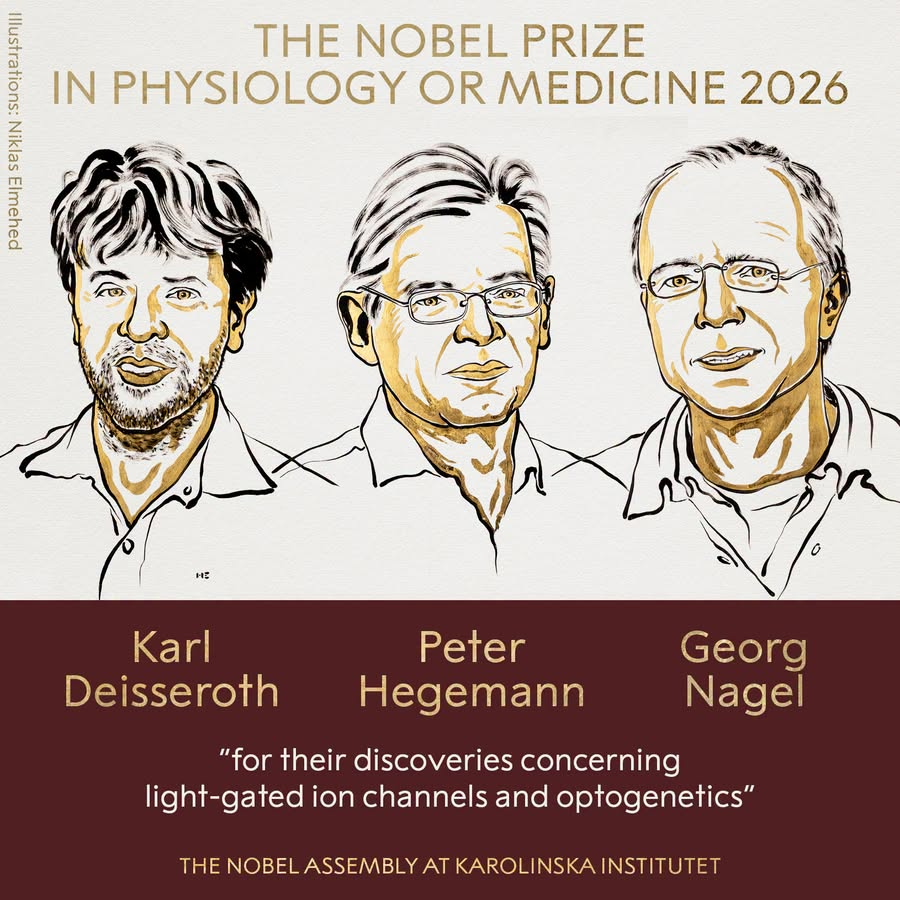
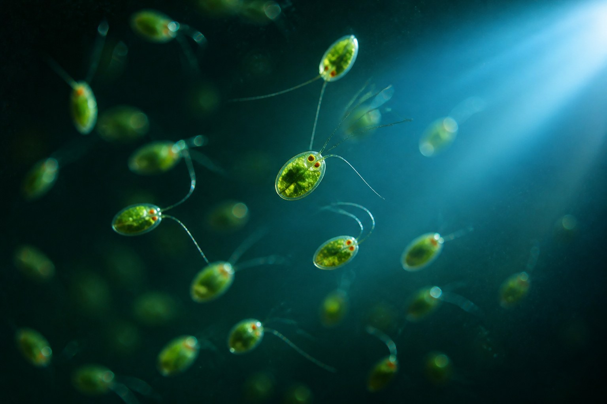

瑞典卡羅林斯卡學院諾貝爾大會宣布,將2026年諾貝爾生理學或醫學獎,共同頒給 Karl Deisseroth、Peter Hegemann 與 Georg Nagel,表彰他們「關於光閘離子通道與光遺傳學的發現」。故事的起點,是一株只想游向光源的單細胞藻類。

插畫:Niklas Elmehed © Nobel Prize Outreach
一種藻類細胞表面有個對藍光反應極快的蛋白質,光一照,通道就打開,離子湧入,電訊號隨之產生。Hegemann 與 Nagel 找到了這個蛋白質「光閘離子通道蛋白」(channelrhodopsin);Deisseroth 把它的基因植入神經細胞,做出一支只聽光指揮的開關——這就是「光遺傳學」(optogenetics)。從此,科學家第一次能精準打開或關掉大腦裡特定一種神經細胞,看它究竟掌管了哪一段記憶、哪一種情緒、哪一個動作。
1990年代初,德國科學家 Peter Hegemann 盯著培養皿裡的綠藻 Chlamydomonas 發呆——每次從一側打光,原本均勻懸浮的藻液,幾分鐘內就整片往光源湧去。牠們靠著細胞表面一個橘紅色的小「眼點」感光,但真正讓 Hegemann 著迷的,是反應的速度。

示意圖(AI生成,非顯微實拍):Chlamydomonas 細胞表面的眼點感光後,整群藻類會朝光源方向游動——這個「趨光性」正是本屆得獎研究的起點
他用微電極量測眼點受光後產生的電訊號,發現光線照到眼點後,不到半毫秒電流就已經出現。相比之下,光線進入人類眼睛,要經過一連串化學連鎖反應才能轉成電訊號,整個過程至少需要10毫秒——藻類的反應快了二十幾倍。Hegemann 大膽猜測:在藻類身上,「感光」與「放行離子」這兩件事,可能是同一個蛋白質同時完成的。當時沒有人相信這種蛋白質存在。
要證實這個猜想並不容易——這種蛋白質一旦離開藻類細胞的天然環境就極不穩定,屢屢分解。直到2000年前後,日本團隊公開了Chlamydomonas的基因圖譜,Hegemann的團隊才在裡頭找到兩段與已知感光蛋白相似的基因。他聯繫了法蘭克福的 Georg Nagel——一位擅長用青蛙卵細胞研究蛋白質功能的科學家,請他幫忙驗證。
Nagel 把這兩段基因分別注入蛙卵,蛙卵細胞表面隨即長出了這種神祕蛋白質。打上藍光的瞬間,通道應聲而開,帶正電的離子湧入,電訊號產生——而且反應只花了0.2毫秒。Hegemann十年前的假說,被證實了。這個蛋白質後來被命名為channelrhodopsin(光閘離子通道蛋白),2002年與2003年,兩人先後發表了channelrhodopsin-1與channelrhodopsin-2的發現。更驚人的是,他們把這段基因轉殖進人類與倉鼠的培養細胞裡,這些原本對光毫無反應的細胞,也瞬間變得「怕光」——會因為光照產生電訊號。一個藻類的生存工具,原來可以在任何細胞裡運作。
1990年代,Karl Deisseroth 還在史丹佛攻讀醫學院,原本打算走神經外科,卻在精神科的臨床訓練中被病人的處境震動——為什麼憂鬱症患者感受不到喜悅?思覺失調的妄想從何而來?他同時攻讀神經科學博士,卻漸漸明白:要看懂這些疾病,得先看懂神經細胞如何在活著的大腦裡運作,而當時的工具太過粗糙。
許多同行認為,「用光精準操控單一神經細胞」這種構想——最早由發現DNA雙螺旋的 Francis Crick 在1970年代末提出——近乎天方夜譚,不值得投入資源。Deisseroth 仍決定冒險:他能提供給病人的治療方式太有限、副作用太大,他需要一條更深的路。
當他聽聞 channelrhodopsin-2 的發現,立刻寫信向 Nagel 要了這段基因,植入培養皿裡的大鼠神經細胞。他原本擔心外來基因會傷害敏感的神經細胞,結果細胞不只安然無恙,還順利「長出」了這個光感蛋白。打上藍光的瞬間,神經細胞應聲放電,訊號甚至能傳遞給下一個神經元。2005年,這項突破發表;一年後,這個方法有了名字——光遺傳學 optogenetics。
2007年,Deisseroth 團隊把這套開關裝進活體小鼠的運動皮質,透過一根細如髮絲的光纖伸入腦中,照光的瞬間,小鼠的鬍鬚應聲擺動——人類第一次能用光,「遙控」一隻活體動物的特定行為。同一年,團隊用同樣的方法喚醒了沉睡中的小鼠,證實了特定神經細胞確實掌管清醒與睡眠。2012年,他與1987年諾貝爾獎得主 Susumu Tonegawa 合作,甚至重新「啟動」了一段恐懼記憶的神經迴路——小鼠明明身處安全環境,卻表現出恐懼反應。這是科學家第一次證明:某段記憶,確實對應著某一群特定的神經細胞。
成人大腦約有900億個神經細胞,彼此交織出數兆個連結,功能迥異的神經元往往緊緊相鄰。過去的研究方法就像在描一張模糊的素描——只能知道「這個腦區大致負責什麼」,卻無法證明是哪一種神經細胞,真正造成了某個感覺或行為。光遺傳學第一次讓科學家可以精準打開或關掉迷宮裡的某一條特定路徑。
科學家已經用這套方法,找出掌管痛覺、社交行為、口渴、食慾、獎賞與專注力的神經迴路,也延伸到心跳、腸道感覺如何影響情緒的研究。
憂鬱症、焦慮症、思覺失調、阿茲海默症、帕金森氏症——研究者開始能定位這些疾病在神經迴路層級上,究竟哪裡「失靈」。
臨床試驗中,科學家將類似channelrhodopsin的蛋白植入因「視網膜色素病變」而失明者的視網膜,患者配戴特製發光眼鏡後,重新能辨識並抓取桌上的物體。
現行電子耳以電流刺激聽覺神經,精準度有限;若能改用光來刺激,未來或許能讓電子耳的聲音解析度更進一步。
1971年生。醫師兼神經科學家,將channelrhodopsin轉化為可用於活體神經細胞的光控開關,2006年命名「光遺傳學」。
1954年生。因好奇藻類為何能瞬間感光,提出「單一蛋白質身兼感光器與離子通道」的關鍵假說。
1953年生。以蛙卵細胞實驗,親手驗證並定性了channelrhodopsin這個蛋白質的真實功能。
一顆只有1.3公斤重的器官,裝著童年的記憶、無端的白日夢,也裝著喜悅、愛與忌妒——人類好奇了幾千年,終於有了一盞,只聽光指揮的燈。
——靈感取自 Virginia Woolf 1932年書信中對自己大腦的描述